BTER Guide: How to create a BTER graph for benchmarking
By the BTER Team (Sandia National Laboratories, Livermore, CA):
- Tamara G. Kolda, tgkolda@sandia.gov
- Ali Pinar, apinar@sandia.gov
- Todd Plantenga, tplante@sandia.gov
- C. Seshadhri, scomand@sandia.gov
April 2013
Distributed with href="index.html">FEASTPACK</a.
Abstract: The attached document shows how to create BTER models for benchmarking, following the reference given at the end of the document.
Sandia National Laboratories is a multi-program laboratory managed and operated by Sandia Corporation, a wholly owned subsidiary of Lockheed Martin Corporation, for the U.S. Department of Energy's National Nuclear Security Administration under contract DE-AC04-94AL85000.
Contents
- Step 1: Decide characteristics of the graph
- Step 2: Create a desired degree distribution
- Step 3: Create a desired clustering coefficient per degree profile
- Step 4: Generate BTER model
- Step 5: Create sparse matrix representation of BTER graph
- Step 6: Calculate metrics on BTER graph and compare to targets
- Step 7: Visualize the data
- Note 1: Speeding up the degree distribution generation
- Note 2: Why we don't like power law
- References
Step 1: Decide characteristics of the graph
BTER requires a degree distribution and clustering coefficient by degree profile as input. We'll derive these based on some overall graph metrics:
- Number of nodes
- Bound on maximum degree
- Average degree
- Maximum clustering coefficient
- Global clustering coefficient
nnodes = 1e5; % Number of nodes maxdeg_bound = 1e4; % Absolute bound on maximum degree avgdeg_target = 32; % Target average degree maxccd_target = 0.95; % Target maximum clustering coefficient (for degree 2) gcc_target = 0.15; % Target global clustering coefficient
Step 2: Create a desired degree distribution
We need to proscribe a specific degree distribution. We recommend the discrete generalized log normal, but we also provide the option to use the discrete power law (discussed below). The generalized log normal distribution says that the probability of degree  is
is
![$$ P(d \,|\, \alpha, \beta) \propto \exp\left[-\left(\frac{\log
d}{\alpha}\right)^\beta\right],$$](doc_bter_ideal_eq52505.png)
where 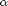 and 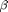 are parameters of the distribution. Similarily, the power law distribution says that the probability of degree is
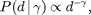
where  is the parameter of the distribution.
is the parameter of the distribution.
We require the distribution to be discrete and let  denote the absolute bound on maximum degree (denoted as maxdeg_bound in the code). For any distribution, we set
denote the absolute bound on maximum degree (denoted as maxdeg_bound in the code). For any distribution, we set  for all
for all  and then normalize so that
and then normalize so that  .
.
Our goal is to find parameters for the selected distribution such that the following hold:
- 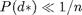 where 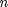 is the total number of nodes in the graph. In essence, we want to ensure that there are few nodes with very high degrees.
- The average degree, 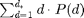, matches the desired average degree.
We provide the function degdist_param_search which uses optimization to search for parameters that meet the above two objectives. Specifically, it tries to minimize the function 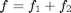 where
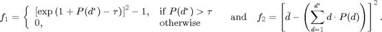
Here,  represents the desired average degree (denoted as avgdeg_target in the code). The value of
represents the desired average degree (denoted as avgdeg_target in the code). The value of  should be less than
should be less than  and defaults to 1e-10. It can be modified via the 'maxdeg_prbnd' option of degdist_param_search.
and defaults to 1e-10. It can be modified via the 'maxdeg_prbnd' option of degdist_param_search.
% Run the optimization procedure tau = 1e-3 / nnodes; % tau << 1/nnodes [alpha, beta] = degdist_param_search(avgdeg_target, maxdeg_bound, 'maxdeg_prbnd', tau); fprintf('Selected alpha=%f and beta=%f\n', alpha, beta);
alpha=2.000, beta=2.000, maxdeg=10000, p(maxdeg)=6.568451e-11, avgdeg=20.6, y=129.32 alpha=2.100, beta=2.000, maxdeg=10000, p(maxdeg)=4.044975e-10, avgdeg=28.0, y=16.25 alpha=2.000, beta=2.100, maxdeg=10000, p(maxdeg)=2.113216e-12, avgdeg=15.7, y=265.65 alpha=2.100, beta=1.900, maxdeg=10000, p(maxdeg)=5.206135e-09, avgdeg=42.5, y=110.20 alpha=2.200, beta=1.900, maxdeg=10000, p(maxdeg)=1.793480e-08, avgdeg=61.2, y=856.82 alpha=2.050, beta=1.975, maxdeg=10000, p(maxdeg)=3.490557e-10, avgdeg=26.2, y=34.06 alpha=2.050, beta=2.075, maxdeg=10000, p(maxdeg)=1.601137e-11, avgdeg=19.1, y=165.74 alpha=2.087, beta=1.944, maxdeg=10000, p(maxdeg)=1.486064e-09, avgdeg=33.4, y=1.96 alpha=2.138, beta=1.969, maxdeg=10000, p(maxdeg)=1.661232e-09, avgdeg=35.6, y=12.74 alpha=2.125, beta=1.913, maxdeg=10000, p(maxdeg)=5.419218e-09, avgdeg=43.8, y=138.18 alpha=2.106, beta=1.978, maxdeg=10000, p(maxdeg)=8.096126e-10, avgdeg=30.9, y=1.12 alpha=2.056, beta=1.953, maxdeg=10000, p(maxdeg)=7.118139e-10, avgdeg=29.0, y=9.06 alpha=2.077, beta=1.957, maxdeg=10000, p(maxdeg)=8.867045e-10, avgdeg=30.5, y=2.22 alpha=2.117, beta=1.965, maxdeg=10000, p(maxdeg)=1.354375e-09, avgdeg=33.8, y=3.23 alpha=2.087, beta=1.959, maxdeg=10000, p(maxdeg)=9.876731e-10, avgdeg=31.3, y=0.49 alpha=2.105, beta=1.993, maxdeg=10000, p(maxdeg)=5.312901e-10, avgdeg=29.1, y=8.15 alpha=2.092, beta=1.956, maxdeg=10000, p(maxdeg)=1.154441e-09, avgdeg=32.2, y=0.05 alpha=2.072, beta=1.937, maxdeg=10000, p(maxdeg)=1.408339e-09, avgdeg=32.7, y=0.43 alpha=2.078, beta=1.934, maxdeg=10000, p(maxdeg)=1.640504e-09, avgdeg=33.6, y=2.72 alpha=2.084, beta=1.953, maxdeg=10000, p(maxdeg)=1.122558e-09, avgdeg=31.9, y=0.02 alpha=2.104, beta=1.972, maxdeg=10000, p(maxdeg)=9.204847e-10, avgdeg=31.5, y=0.28 alpha=2.096, beta=1.963, maxdeg=10000, p(maxdeg)=1.023617e-09, avgdeg=31.7, y=0.07 alpha=2.080, beta=1.946, maxdeg=10000, p(maxdeg)=1.266152e-09, avgdeg=32.3, y=0.11 alpha=2.092, beta=1.959, maxdeg=10000, p(maxdeg)=1.079473e-09, avgdeg=31.9, y=0.01 alpha=2.085, beta=1.955, maxdeg=10000, p(maxdeg)=1.049334e-09, avgdeg=31.5, y=0.22 alpha=2.090, beta=1.956, maxdeg=10000, p(maxdeg)=1.127320e-09, avgdeg=32.0, y=0.00 alpha=2.098, beta=1.962, maxdeg=10000, p(maxdeg)=1.084245e-09, avgdeg=32.1, y=0.01 alpha=2.096, beta=1.959, maxdeg=10000, p(maxdeg)=1.132159e-09, avgdeg=32.2, y=0.05 alpha=2.093, beta=1.959, maxdeg=10000, p(maxdeg)=1.092435e-09, avgdeg=32.0, y=0.00 alpha=2.085, beta=1.953, maxdeg=10000, p(maxdeg)=1.136011e-09, avgdeg=31.9, y=0.00 alpha=2.089, beta=1.955, maxdeg=10000, p(maxdeg)=1.122774e-09, avgdeg=32.0, y=0.00 alpha=2.091, beta=1.958, maxdeg=10000, p(maxdeg)=1.087994e-09, avgdeg=31.9, y=0.01 alpha=2.090, beta=1.957, maxdeg=10000, p(maxdeg)=1.117361e-09, avgdeg=32.0, y=0.00 alpha=2.086, beta=1.953, maxdeg=10000, p(maxdeg)=1.148455e-09, avgdeg=32.0, y=0.00 alpha=2.088, beta=1.954, maxdeg=10000, p(maxdeg)=1.142888e-09, avgdeg=32.0, y=0.00 alpha=2.088, beta=1.955, maxdeg=10000, p(maxdeg)=1.127770e-09, avgdeg=32.0, y=0.00 alpha=2.088, beta=1.954, maxdeg=10000, p(maxdeg)=1.137827e-09, avgdeg=32.0, y=0.00 alpha=2.088, beta=1.955, maxdeg=10000, p(maxdeg)=1.130277e-09, avgdeg=32.0, y=0.00 alpha=2.093, beta=1.959, maxdeg=10000, p(maxdeg)=1.099729e-09, avgdeg=32.0, y=0.00 alpha=2.091, beta=1.957, maxdeg=10000, p(maxdeg)=1.112414e-09, avgdeg=32.0, y=0.00 alpha=2.091, beta=1.957, maxdeg=10000, p(maxdeg)=1.116122e-09, avgdeg=32.0, y=0.00 alpha=2.091, beta=1.957, maxdeg=10000, p(maxdeg)=1.113649e-09, avgdeg=32.0, y=0.00 alpha=2.091, beta=1.957, maxdeg=10000, p(maxdeg)=1.115503e-09, avgdeg=32.0, y=0.00 alpha=2.086, beta=1.953, maxdeg=10000, p(maxdeg)=1.146544e-09, avgdeg=32.0, y=0.00 alpha=2.091, beta=1.957, maxdeg=10000, p(maxdeg)=1.111228e-09, avgdeg=32.0, y=0.00 alpha=2.088, beta=1.954, maxdeg=10000, p(maxdeg)=1.134634e-09, avgdeg=32.0, y=0.00 alpha=2.089, beta=1.955, maxdeg=10000, p(maxdeg)=1.128731e-09, avgdeg=32.0, y=0.00 alpha=2.091, beta=1.957, maxdeg=10000, p(maxdeg)=1.113981e-09, avgdeg=32.0, y=0.00 alpha=2.089, beta=1.955, maxdeg=10000, p(maxdeg)=1.126177e-09, avgdeg=32.0, y=0.00 alpha=2.087, beta=1.954, maxdeg=10000, p(maxdeg)=1.139548e-09, avgdeg=32.0, y=0.00 alpha=2.085, beta=1.952, maxdeg=10000, p(maxdeg)=1.151790e-09, avgdeg=32.0, y=0.00 alpha=2.087, beta=1.954, maxdeg=10000, p(maxdeg)=1.136967e-09, avgdeg=32.0, y=0.00 alpha=2.088, beta=1.955, maxdeg=10000, p(maxdeg)=1.130784e-09, avgdeg=32.0, y=0.00 alpha=2.088, beta=1.954, maxdeg=10000, p(maxdeg)=1.134902e-09, avgdeg=32.0, y=0.00 alpha=2.088, beta=1.955, maxdeg=10000, p(maxdeg)=1.131812e-09, avgdeg=32.0, y=0.00 alpha=2.086, beta=1.953, maxdeg=10000, p(maxdeg)=1.145258e-09, avgdeg=32.0, y=0.00 alpha=2.088, beta=1.955, maxdeg=10000, p(maxdeg)=1.130914e-09, avgdeg=32.0, y=0.00 alpha=2.087, beta=1.954, maxdeg=10000, p(maxdeg)=1.140454e-09, avgdeg=32.0, y=0.00 alpha=2.088, beta=1.954, maxdeg=10000, p(maxdeg)=1.132710e-09, avgdeg=32.0, y=0.00 alpha=2.087, beta=1.954, maxdeg=10000, p(maxdeg)=1.137835e-09, avgdeg=32.0, y=0.00 alpha=2.088, beta=1.955, maxdeg=10000, p(maxdeg)=1.129215e-09, avgdeg=32.0, y=0.00 alpha=2.088, beta=1.955, maxdeg=10000, p(maxdeg)=1.132013e-09, avgdeg=32.0, y=0.00 alpha=2.089, beta=1.955, maxdeg=10000, p(maxdeg)=1.126025e-09, avgdeg=32.0, y=0.00 alpha=2.088, beta=1.954, maxdeg=10000, p(maxdeg)=1.134869e-09, avgdeg=32.0, y=0.00 alpha=2.088, beta=1.954, maxdeg=10000, p(maxdeg)=1.134667e-09, avgdeg=32.0, y=0.00 alpha=2.088, beta=1.954, maxdeg=10000, p(maxdeg)=1.132676e-09, avgdeg=32.0, y=0.00 alpha=2.087, beta=1.954, maxdeg=10000, p(maxdeg)=1.135736e-09, avgdeg=32.0, y=0.00 alpha=2.088, beta=1.954, maxdeg=10000, p(maxdeg)=1.132791e-09, avgdeg=32.0, y=0.00 alpha=2.088, beta=1.955, maxdeg=10000, p(maxdeg)=1.130602e-09, avgdeg=32.0, y=0.00 alpha=2.088, beta=1.955, maxdeg=10000, p(maxdeg)=1.131667e-09, avgdeg=32.0, y=0.00 alpha=2.088, beta=1.955, maxdeg=10000, p(maxdeg)=1.131783e-09, avgdeg=32.0, y=0.00 alpha=2.088, beta=1.955, maxdeg=10000, p(maxdeg)=1.132452e-09, avgdeg=32.0, y=0.00 alpha=2.088, beta=1.955, maxdeg=10000, p(maxdeg)=1.132006e-09, avgdeg=32.0, y=0.00 alpha=2.088, beta=1.955, maxdeg=10000, p(maxdeg)=1.132341e-09, avgdeg=32.0, y=0.00 alpha=2.088, beta=1.954, maxdeg=10000, p(maxdeg)=1.133465e-09, avgdeg=32.0, y=0.00 alpha=2.088, beta=1.954, maxdeg=10000, p(maxdeg)=1.133016e-09, avgdeg=32.0, y=0.00 Selected alpha=2.087916 and beta=1.954470
Now that we have target values, we can create the distribution and visualize it. The red dashed line shows the cutoff value of .
% Create the discrete PDF pdf = dglnpdf(maxdeg_bound,alpha,beta); % Visualize the PDF figure; loglog(pdf); hold on; plot([1 maxdeg_bound], [tau tau], 'r--'); tstr = sprintf('Discrete Log-Normal PDF with \\alpha = %.2f and \\beta = %.2f', alpha, beta); title(tstr); xlabel('Degree (d)') ylabel('Probability P(d)');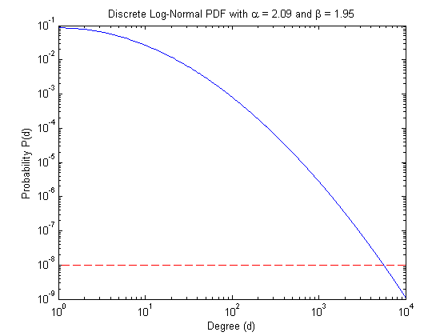
Now we show a few realizations of the sampled degree distribution, denoted by nd in the code. We'll use the last one as we move forward to Step 3.
figure; pos = get(gcf, 'Position'); set(gcf, 'Position', [pos(1) pos(2) 800 600]); for i = 1:6 subplot(2,3,i); set(gca, 'FontSize', 8); nd = gendegdist(nnodes,pdf); loglog(nd,'b.'); xlim([1 maxdeg_bound]) avgdeg = sum(nd .* (1:length(nd))')/sum(nd); maxdeg = find(nd>0,1,'last'); tstr = sprintf('Avg Deg = %.1f, Max Deg = %d', avgdeg, maxdeg); title(tstr); end

Step 3: Create a desired clustering coefficient per degree profile
We have wide latitude in choosing the clustering coefficients. Let  be the specified degree distribution (denoted as nd in the code). Then we use the following arbitrary formula to define the clustering coefficient profile:
be the specified degree distribution (denoted as nd in the code). Then we use the following arbitrary formula to define the clustering coefficient profile:
![$$\bar c_d = c_{\rm max} \exp[-(d-1) \cdot \xi] \mbox{ for } d \geq 2,$$](doc_bter_ideal_eq86852.png)
where  and
and  are user-defined parameters. We've already specified with the choice of maxccd_target. We let ccd_target denote 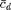 and xi denote . We provide the function cc_param_search to determine , based on the target GCC value.
are user-defined parameters. We've already specified with the choice of maxccd_target. We let ccd_target denote 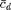 and xi denote . We provide the function cc_param_search to determine , based on the target GCC value.
% Find the optimal xi maxdeg = find(nd>0,1,'last'); xi = cc_param_search(nd, maxccd_target, gcc_target); fprintf('Selected xi=%f\n', xi); % Plot the target clustering coefficient per degree (CCD) ccd_target = [0; maxccd_target * exp(-(0:maxdeg-2)'.* xi)]; figure; semilogx(2:maxdeg, ccd_target(2:end),'LineWidth',3); hold on; ylim([0,1]); xlim([1 maxdeg_bound]);
xi = 5.000000e-01, target gcc = 0.150000, current gcc = 0.000138 xi = 5.250000e-01, target gcc = 0.150000, current gcc = 0.000127 xi = 4.750000e-01, target gcc = 0.150000, current gcc = 0.000150 xi = 4.500000e-01, target gcc = 0.150000, current gcc = 0.000165 xi = 4.000000e-01, target gcc = 0.150000, current gcc = 0.000203 xi = 3.500000e-01, target gcc = 0.150000, current gcc = 0.000256 xi = 2.500000e-01, target gcc = 0.150000, current gcc = 0.000468 xi = 1.500000e-01, target gcc = 0.150000, current gcc = 0.001162 xi = -5.000000e-02, target gcc = 0.150000, current gcc = 94536884188130833000000000000000000000000000000000000000000000000000000000000000000000000000000000000000000000000000000000000000000000000000000.000000 xi = 2.500000e-01, target gcc = 0.150000, current gcc = 0.000468 xi = 5.000000e-02, target gcc = 0.150000, current gcc = 0.007180 xi = -5.000000e-02, target gcc = 0.150000, current gcc = 94536884188130833000000000000000000000000000000000000000000000000000000000000000000000000000000000000000000000000000000000000000000000000000000.000000 xi = -5.000000e-02, target gcc = 0.150000, current gcc = 94536884188130833000000000000000000000000000000000000000000000000000000000000000000000000000000000000000000000000000000000000000000000000000000.000000 xi = 1.000000e-01, target gcc = 0.150000, current gcc = 0.002340 xi = -4.440892e-16, target gcc = 0.150000, current gcc = 0.950000 xi = 7.500000e-02, target gcc = 0.150000, current gcc = 0.003775 xi = 2.500000e-02, target gcc = 0.150000, current gcc = 0.019552 xi = -4.440892e-16, target gcc = 0.150000, current gcc = 0.950000 xi = -4.440892e-16, target gcc = 0.150000, current gcc = 0.950000 xi = 3.750000e-02, target gcc = 0.150000, current gcc = 0.011052 xi = 1.250000e-02, target gcc = 0.150000, current gcc = 0.046725 xi = -4.440892e-16, target gcc = 0.150000, current gcc = 0.950000 xi = -4.440892e-16, target gcc = 0.150000, current gcc = 0.950000 xi = 1.875000e-02, target gcc = 0.150000, current gcc = 0.028521 xi = 6.250000e-03, target gcc = 0.150000, current gcc = 0.098027 xi = -4.440892e-16, target gcc = 0.150000, current gcc = 0.950000 xi = -4.440892e-16, target gcc = 0.150000, current gcc = 0.950000 xi = 9.375000e-03, target gcc = 0.150000, current gcc = 0.064546 xi = 3.125000e-03, target gcc = 0.150000, current gcc = 0.181043 xi = -4.440892e-16, target gcc = 0.150000, current gcc = 0.950000 xi = -4.440892e-16, target gcc = 0.150000, current gcc = 0.950000 xi = 4.687500e-03, target gcc = 0.150000, current gcc = 0.128429 xi = 6.250000e-03, target gcc = 0.150000, current gcc = 0.098027 xi = 3.906250e-03, target gcc = 0.150000, current gcc = 0.150684 xi = 3.125000e-03, target gcc = 0.150000, current gcc = 0.181043 xi = 4.296875e-03, target gcc = 0.150000, current gcc = 0.138761 xi = 3.515625e-03, target gcc = 0.150000, current gcc = 0.164596 xi = 4.101562e-03, target gcc = 0.150000, current gcc = 0.144501 xi = 3.710937e-03, target gcc = 0.150000, current gcc = 0.157361 xi = 4.003906e-03, target gcc = 0.150000, current gcc = 0.147534 xi = 3.808594e-03, target gcc = 0.150000, current gcc = 0.153957 xi = 3.955078e-03, target gcc = 0.150000, current gcc = 0.149094 xi = 3.857422e-03, target gcc = 0.150000, current gcc = 0.152305 xi = 3.930664e-03, target gcc = 0.150000, current gcc = 0.149885 xi = 3.955078e-03, target gcc = 0.150000, current gcc = 0.149094 xi = 3.918457e-03, target gcc = 0.150000, current gcc = 0.150284 xi = 3.942871e-03, target gcc = 0.150000, current gcc = 0.149489 xi = 3.924561e-03, target gcc = 0.150000, current gcc = 0.150084 Selected xi=0.003925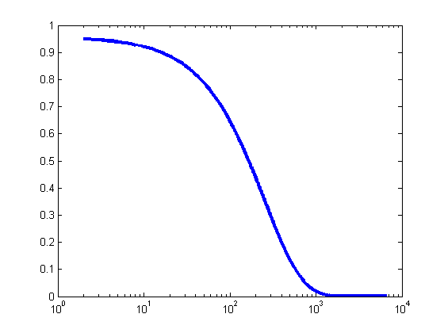
To make the CCD profile a little more realistic, we add noise according to the following formula:
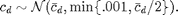
% Compute target CCD ccd_stddev = min(0.01,ccd_target/2); ccd = max(ccd_target + randn(size(ccd_target)) .* ccd_stddev,0); % Plot (on same axes as previous plot) semilogx(2:maxdeg, ccd(2:end),'r.'); legend('Target','Final with Noise');

Step 4: Generate BTER model
BTER creates two edges lists, corresponding to Phase 1 and Phase 2 edges, respectively.
fprintf('Running BTER...\n'); t1=tic; [E1,E2] = bter(nd,ccd); toc(t1) fprintf('Number of edges created by BTER: %d\n', size(E1,1) + size(E2,1));
Running BTER... --- BTER HPC Set-up --- Desired number of nodes: 100000 Desired number of edges: 1605306 Multiplier to degree-1 nodes: 1 Maximum degree: 6650 Number of groups: 137 Number of blocks: 10156 Phase 1 total weight: 3094314 Phase 2 total weight: 421610 Time for setup (sec): 0.17 Determined phase for 3515924 edges in 0.221963 seconds Sampled 3094841 edges for phase 1 in 2.378587 seconds Sampled 421083 edges for phase 2 in 0.642167 seconds Removed 360 loops in 0.020099 seconds --- BTER HPC Complete --- Elapsed time is 3.504003 seconds. Number of edges created by BTER: 3515564
Step 5: Create sparse matrix representation of BTER graph
Converting the edge list to an adjacency matrix is often the most expensive part in MATLAB. We separate this step because the edge list may be sufficient for many applications.
fprintf('Turning edge list into adjacency matrix (including dedup)...\n'); t2=tic; G_bter = bter_edges2graph(E1,E2); toc(t2); fprintf('Number of edges in dedup''d graph: %d\n', nnz(G)/2);
Turning edge list into adjacency matrix (including dedup)... Elapsed time is 8.560615 seconds. Number of edges in dedup'd graph: 1090108
Step 6: Calculate metrics on BTER graph and compare to targets
% Number of nodes and edges nnodes_bter = size(G_bter,1); nedges = sum(nd .* (1:length(nd))'); nedges_bter = nnz(G_bter)/2; fprintf('Comparative Results: %s versus BTER\n', graphname); fprintf('Number of nodes: %d versus %d\n', nnodes, nnodes_bter); fprintf('Number of edges: %d versus %d\n', nedges, nedges_bter); % Degree disttribution nd_bter = accumarray(nonzeros(sum(G_bter,2)),1); maxdeg_bter = find(nd_bter>0,1,'last'); fprintf('Maximum degree: %d versus %d\n', maxdeg, maxdeg_bter); % Clustering coefficients [ccd_bter,gcc_bter] = ccperdeg(G_bter); fprintf('Global clustering coefficient: %.2f versus %.2f\n', gcc_target, gcc_bter);
Comparative Results: web-NotreDame-simple versus BTER Number of nodes: 100000 versus 100000 Number of edges: 3210611 versus 1532209 Maximum degree: 6650 versus 3177 Global clustering coefficient: 0.15 versus 0.31
Step 7: Visualize the data
% Degree distribution figure; loglog(1:length(nd),nd,'ro',1:length(nd_bter),nd_bter,'b*'); title('Degree distribution'); xlabel('Degree'); ylabel('Frequency'); legend('Target', 'BTER');

% Clustering coefficients figure; semilogx(1:length(ccd),ccd,'ro',1:length(ccd_bter),ccd_bter,'b*'); title('Clutering Coefficients'); xlabel('Degree'); ylabel('Mean CC'); legend('Target', 'BTER');

Note 1: Speeding up the degree distribution generation
Randomized sampling for large n can be too slow. To accelerate the process, our gendegdist function assumes specified a bound such that nd(d) = round( n * pdf(d) ) for all d < bnd. Then true random sampling in the range d >= bnd is used for the remaining few nodes that need degrees assigned. If bnd is too large, however, the approximation will be highly innaccurate.
% No acceleration tic; nd_slow = gendegdist(nnodes, pdf); toc; % Generate a random degree distribution using the discrete PDF bnd = 100; tic; nd = gendegdist(nnodes,pdf,bnd); toc; % Show the difference between accelerated and not figure; loglog(nd,'ro'); hold all; loglog(nd_slow,'m.'); legend('Accelerated','No Acceleration'); xlim([1 maxdeg_bound]);
Elapsed time is 0.023331 seconds. Elapsed time is 0.002713 seconds.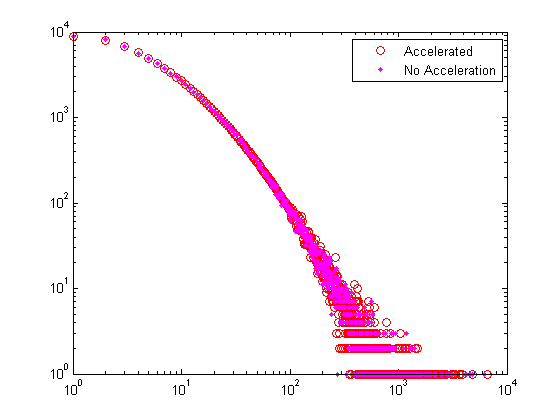
Note 2: Why we don't like power law
It's much more difficult to find power law parameters that allow both a relatively high average degree and a relatively low absolute maximum degree. Using the same parameters as above, we cannot find a fot the power lab distribution such that 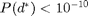.
gamma = degdist_param_search(avgdeg_target, maxdeg_bound, 'type', 'dpl', 'maxdeg_prbnd', tau); fprintf('Selected gamma=%f\n', gamma);
gamma=2.000, maxdeg=10000, p(maxdeg)=6.079641e-09, avgdeg=6.0, y=678.58 gamma=2.100, maxdeg=10000, p(maxdeg)=2.551674e-09, avgdeg=4.2, y=771.04 gamma=1.900, maxdeg=10000, p(maxdeg)=1.435801e-08, avgdeg=9.0, y=536.87 gamma=1.800, maxdeg=10000, p(maxdeg)=3.353586e-08, avgdeg=14.4, y=315.81 gamma=1.600, maxdeg=10000, p(maxdeg)=1.746750e-07, avgdeg=42.8, y=123.31 gamma=1.400, maxdeg=10000, p(maxdeg)=8.255313e-07, avgdeg=137.2, y=11077.58 gamma=1.400, maxdeg=10000, p(maxdeg)=8.255313e-07, avgdeg=137.2, y=11077.58 gamma=1.700, maxdeg=10000, p(maxdeg)=7.723558e-08, avgdeg=24.4, y=64.28 gamma=1.800, maxdeg=10000, p(maxdeg)=3.353586e-08, avgdeg=14.4, y=315.81 gamma=1.650, maxdeg=10000, p(maxdeg)=1.164518e-07, avgdeg=32.2, y=6.43 gamma=1.600, maxdeg=10000, p(maxdeg)=1.746750e-07, avgdeg=42.8, y=123.31 gamma=1.675, maxdeg=10000, p(maxdeg)=9.489508e-08, avgdeg=28.0, y=22.40 gamma=1.625, maxdeg=10000, p(maxdeg)=1.427211e-07, avgdeg=37.1, y=32.44 gamma=1.662, maxdeg=10000, p(maxdeg)=1.051387e-07, avgdeg=30.0, y=10.31 gamma=1.637, maxdeg=10000, p(maxdeg)=1.289406e-07, avgdeg=34.6, y=12.94 gamma=1.656, maxdeg=10000, p(maxdeg)=1.106551e-07, avgdeg=31.1, y=7.22 gamma=1.644, maxdeg=10000, p(maxdeg)=1.225422e-07, avgdeg=33.4, y=8.24 gamma=1.653, maxdeg=10000, p(maxdeg)=1.135176e-07, avgdeg=31.6, y=6.52 gamma=1.647, maxdeg=10000, p(maxdeg)=1.194594e-07, avgdeg=32.8, y=6.99 gamma=1.652, maxdeg=10000, p(maxdeg)=1.149756e-07, avgdeg=31.9, y=6.40 gamma=1.653, maxdeg=10000, p(maxdeg)=1.135176e-07, avgdeg=31.6, y=6.52 gamma=1.651, maxdeg=10000, p(maxdeg)=1.157114e-07, avgdeg=32.1, y=6.39 gamma=1.650, maxdeg=10000, p(maxdeg)=1.164518e-07, avgdeg=32.2, y=6.43 gamma=1.651, maxdeg=10000, p(maxdeg)=1.153429e-07, avgdeg=32.0, y=6.39 gamma=1.652, maxdeg=10000, p(maxdeg)=1.149756e-07, avgdeg=31.9, y=6.40 gamma=1.651, maxdeg=10000, p(maxdeg)=1.155270e-07, avgdeg=32.0, y=6.39 gamma=1.651, maxdeg=10000, p(maxdeg)=1.151591e-07, avgdeg=32.0, y=6.39 gamma=1.651, maxdeg=10000, p(maxdeg)=1.154350e-07, avgdeg=32.0, y=6.39 Warning: Could not find ideal solution. F(X)=6.389128e+00, Exit Flag = 1. Selected gamma=1.651172
Visualizing the results shows the distance from the bound.
% Create the discrete PDF pdf = dplpdf(maxdeg_bound,gamma); % Visualize the PDF figure; loglog(pdf); hold on; plot([1 maxdeg_bound], [tau tau], 'r--'); tstr = sprintf('Discrete Power Law PDF with \\gamma = %.2f', gamma); title(tstr); xlabel('Degree (d)') ylabel('Probability P(d)'); xlim([1 maxdeg_bound]) ylim([1e-11 1])

Now we show a few realization of the sampled degree distribution. Observe that there's very few gaps as we approach the maximum allowed degree (1e5). This results in a "cliff" in the degree distribution rather than a graduate tapering.
figure; pos = get(gcf, 'Position'); set(gcf, 'Position', [pos(1) pos(2) 800 600]); %<- Set size for i = 1:6 subplot(2,3,i); set(gca, 'FontSize', 8); nd = gendegdist(nnodes,pdf); loglog(nd,'b.'); xlim([1 maxdeg_bound]) avgdeg = sum(nd .* (1:length(nd))')/sum(nd); maxdeg = find(nd>0,1,'last'); tstr = sprintf('Avg Deg = %.1f, Max Deg = %d', avgdeg, maxdeg); title(tstr); end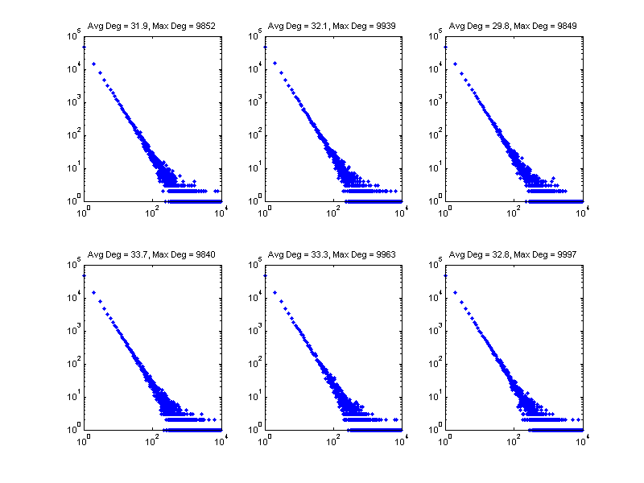
References
- BTER Implementation: T. G. Kolda, A. Pinar, T. Plantenga and C. Seshadhri. A Scalable Generative Graph Model with Community Structure, arXiv:1302.6636, March 2013, http://arxiv.org/abs/1302.6636